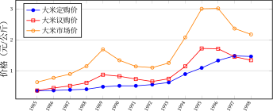
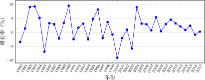
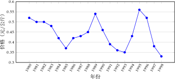

1977 年 11 月 15 日，安徽省在时任省委第一书记 万里 的推动下下达了《关于当前农村经济政策几个问题的规定》（简称“ 省委六条 ”），有“ 尊重生产队的自主权 ”、“ 允许和鼓励社员经营正当的家庭副业 ，对 收回的“自留地” ，要按照政策规定如数退还给社员”等内容，安徽省再兴农业改革。1978 年安徽遭遇大旱，省委决定允许 借地给农民种“保命麦”，9 月，肥西县山南公社黄花大队与山南公社馆西大队小井庄生产队借此政策搞起实质“ 包产 到户 ”，12 月凤阳县梨园公社严岗大队小岗生产队决定“ 包干到户 ”。
需要注意的是，虽有省委领导人万里推动，但不管在党内还是学界中这块内容仍然被认为是 农民先导和主导 ，学者 高王凌 将农民主导的 软性反抗觉悟 称为“ 反行为 ”。笔者认为，这种“ 反行为 ”实则是中国各行各业至今仍然具有的普遍现象，有时民间俗称“潜规则”。关于这方面的研究可能会在相当多的层面上有利于国计民生，希望有相关人士从事和深入此项工作。
“统购统销”政策实际上是国家吸纳农村产出以支持“ 工农业剪刀差 ”的正常运作：同价值工业产品、农业产品的价格不成比例，形成剪刀差。国家财政以 相对低价格收购农村农副产品 ，获得剩余以补贴城镇工业及职工，使城镇职工 可以保有相对低的工资，工业可以保持较少支出（这种做法在马克思主义理论中其实是提高相对剩余价值。 ），这样国家也可以凭借从农业中得来的利差去发展工业。毛时代模仿斯大林模式尤其侧重重工业，邓时代减弱了对重工业的扶持力度。这有其内在的 逻辑机理，后发达国家凭借“工农业剪刀差”，通过重工业的低成本优势获取世界市场中的优势，追赶发达国家。这部分内容在前文已详细叙述。
根据薄一波所说，统购统销造成的财政缺口是巨大的：
（统购统销）第二年（即 1954 至 1955 年度），即赔了 2.5506 亿元。随着粮食经营费用的增加和购销价格“倒挂”现象的出现，亏损越来越大……1987 年达 276 亿元，1988 年突破 300 亿元，成为 国家财政的一大包袱 。 [56]281
1978 年开始，在统购统销的大框架下政府对粮食价格体制进行了一定程度的改革，粮食市场出现松动，市场机制在小范围内开始发挥作用。国家调整了 1966 年以来长期未动的粮食价格，统购价格提高了 20%，超购部分在此基础上再加价 50%。 粮食的 提价大大刺激了农民的生产积极性，粮食产量大幅提升， 长期以来粮食供需紧张状况得到了缓解， 代表自由市场机制的农产品集贸市场开始出现 。 [71]
1983 年中央一号文件《当前农村经济政策的若干问题》，从理论、舆论、政策上确立和巩固了“实行 生产责任制 ，特别是 联产承包制 ；实行 政社分设 。”原来 三级所有 的公社、生产大队和生产队集体组织 被取缔 ，建立 乡政府和基层群众性自治的村民委员会。 15
15 http://cpc.people.com.cn/GB/64162/64172/85037/85039/6619026.html
即使是“包干到户”这种落后小农经济的生产力、生产关系，国家在 1984 年这个“特大丰收年”已经无法去完成全面的“统购统销”了， “1983–1984 年出现全国性‘ 卖粮难 ’问题。1984 年，粮食露天存放量超过 300 亿公斤以上，形成‘ 收 不起、存不下、调不走、销不掉 ’的困局。同时，超购加价政策以及粮食购销差价补贴，使国家背上沉重的财政负担。” [72]
卢迈说，为 减轻此时财政负担 ，“将市场风险转移给农民”，同时 兼顾城镇企业、职工利益分配 ，国家出台了一系列政策。
1984 年 10 月 20 日，中共十二届三中全会通过的《中共中央关于经济体制改革的决定》明确由农村转向以城市为重点的整个经济体制改革。1985 年 1 月 1 日，中共中央、国务院发布《关于进一步活跃农村经济的十项政策》，粮食、棉花取消统购，改为 合同定购 ；定购以外的粮食可以自由上市；逐步放开生猪、水产品和大中城市、工矿区的蔬菜价格。农产品实行政府定价和市场定价并存的“ 价格双轨制 ” ， “ 逐步缩小合同定购数量，扩大市场议购 ；城市应继续办好各类农产品 批发市场和贸易中心；发展对外经济、技术交流等。其中最为重要的内容就是 粮棉的合同定购制 。
粮食合同定购价格按“倒三七”比例计价，其实就是按照过去定购价格的 135% 收购全部合同定购粮食。16。1985 年我国粮食总产量较上一年 下降 6.92%，这一大幅下降还有国家“退耕还林”等政策影响。
由于 “倒三七”比例加价小于超购加价 （笔者注：原统购统销政策中，超购部分直接是定购价的 150%，现在合同定购粮食统一为 135%，量大到一定程度会使农民收益不如从前）对农户生产行为刺激，以及经济作物的相对价格较高，这一时期的 粮食生产出现 徘徊不前 。 [73]
国家定价是稳定农民预期的重要手段。1985 年和 1993 年我们尝试将计划价和市场价 并轨 ，实际上是 在粮食供大于求的形势下将市场风险转嫁给农民 ，这是 当年粮食减产的重要原因之一 。 [74]
然而合同订购执行不到一年便出现 逆转 , 主要是因为 粮食收购价格下降而导致的 1985 年粮食大幅减产 。为控制粮源、保障供给以及稳定粮食市场价格, 国家赋予合同订购为 “国家任务”性质, 并封锁粮食市场进行强制收购。 合同订购 性质的改变 ，标志着粮改折回到 “统购统销”政策原点 , 也意味着粮价进入“ 虚位双轨制 ”时期 ( 计划有效运行、市场无效运行 ), 中国粮价市场化改革出现第一次反复。 [72]
合同定购变为实质上的合同征购。为应对农民抵触情绪，刺激农民积极性，1986 年 10 月 14 日，国务院发布《国务院关于完善粮食合同定购制度的通知》 。通知中对 农民的优惠政策 ： 超额部分实行议购价 ——“从一九八七粮食年度 开始，国家对农民完成合同定购任务外的粮食，实行 随行就市，议价收购，让农民从多卖议价粮中增加收入 ” ， 粮棉三挂钩 ——“一九八七年中央专项安排一些 化肥、柴油与粮食合同定购 挂钩……国家对合同定购的粮食 发给 预购定金 ，由粮食部门按合同定购粮食价款的 20% 发放，在农民交粮时扣还，利息由中央财政负担。 ” ；中央对 地方和粮企的优惠政策 ： “中央对各省、自治区、直辖市 定购任务仍按九折包干 ，即 90% 的部分按“倒 三七”比例价结算，其余 10% 按‘议转平’价结算 。 国家弥补平价粮食收支差额所需要的粮食 ，用‘议转平’的办法解决”。
‘议转平’又进一步加大了国家的财政负担。而同时，定购价远远低于市场价，议购价也低于市场价。
陶昌盛根据年份物价指数（CPI）去除通货膨胀，折算了大米、小麦、玉米的实际定购价和市场价，结果表明 三种农产品实际定购价在 1987–1993 年基本无波动，且均小幅度低于 1985–1986 年定购价。[71]
合同定购价和议购价在此时期均远远小于市场价格。笔者根据王小鲁所整理补充的数据[75] 作出如下图表：



图 10.1: 资料来源：王小鲁，《中国粮食市场的波动》
1987–1988 年高于 18% 的强通货膨胀及“价格闯关”的失败，使市场恶化，全国生产下降，我国在 1988 后半年为稳定市场采取了一系列措施，如通货紧缩、减少财政支出、缩减基建规模、增加税收等。为扭转农业不利局面，国家也提升了一系列农业品价格。 1989 年较 1988 年，粮食议购价提升 40.3%，市场价提升 47.2%。 议购价和市场价的差距虽然仍较大，但已经 强烈刺激了农民的生产积极性 。1990 年粮食产量年较 1989 年 粮食产量增长 9.5%，达到 4.46 亿吨。据王小鲁统 计，我国在 1989–1991 年，粮食净进口年年增加。1989 农民迎来了新的问题—— 农产品全面“卖难”，并持续至 1991 年。据卢锋，统计
名义粮价从 1989 年的 1.09 元/公斤下跌到 1992 年的 0.82 元/公斤；同期真实粮价从 0.54 元/公斤跌到 0.36 元/公斤， 跌幅达 33%。1989–1991 年三年间，国内购销余量为 5024 万吨，加上净进口 2162 万吨，理论累积剩余超过 7000 万吨。 结果出现比 80 年代中期更为严重的市场过剩形势。
此后，国家也颁布了一系列粮食补贴，防止谷贱伤农。1990 年 9 月 16 日，国务院发文《国务院关于建立 国家专项粮食储备制度 的决定》。
为了解决主产区农民 卖粮难问题 ，保护农民种粮积极性，当前必须 加强粮食收购 ，把农民需要出售的余粮收购起来，以促进粮食生产持续稳定发展； 建立国家专项粮食储备，增强宏观调控能力，搞好丰歉调剂，保证粮食市场 供应和粮价的基本稳定。
敞开收购议价粮，满足农民出售余粮的要求。
同年 11 月“全国粮食工作会议在北京召开。国务院决定从 1990 年秋粮收购开始， 将合同定购改为国家定购，交售国家定购粮作为农民应尽义务， 必须保证完成。会议强调要积极稳妥地推进粮食流通体制的改革。”
1991 年 5 月，海南率先实行 粮食购销同价 改革。1991 年 5 月 7 日，国务院发布《国务院关于严格控制农业生产资料价格的通知》， 管控、优惠、平价农业生产所需生产资料 。
1989 年，李鹏在全国人民代表大会的政府工作报告中明确提出要“培育市场体系, 发展生产资料批发市场, 试办期货市场”。期货市场第一次写入官方文件中, 并作为培养市场体系的重要内容提到实践日程。1991 年 3 月，中国第一个粮食批发市场——郑州粮食 批发市场签订了第一份小麦的远期合同，标志着中国期货交易的开始。 [71]
根据农业经济专家17 的研究，1978 到 1985 年城乡收入的差距是缩小的，从 1985 年起扩大。1989 年到 1991 年农民收入增长基本停滞，城乡收入差距又恢复到 1978 年以前的情况。1993 年以后，由于国家提高粮食价格、乡镇企业增长快、外 出务工人口收入增长等原因，农村收入增长较快，但在城市劳动力大量剩余的情况下，这一势头正在改变。 [76]
农业问题是百多年来世界各国所面对的大难题，绝大部分国家都没有美国早期“美国式道路”的农业资本生产条件。发达国家往往借助外债问题等剥削债务国，从债务国中抽取低价农业品，这个难题也一直萦绕着中国至今。关于 1992 年之后的农业改革和发 展，笔者将放到下一章来讲述。
16 按过去定购价格的 30% 和超购价格（过去的超购价格是，在原定购价格基础上加价 50%）的 70% 计算出综合平均单价，作为粮食“倒三七”比例价。其计算公式为：粮食“倒三七”比例价 = 定购价 ×30% ＋（定购价十定购价 ×50%） ×70%，即 135%。
17 汪晖此处所指专家为曾任国务院农村发展研究中心发展研究所市场研究室主任等职务的卢迈